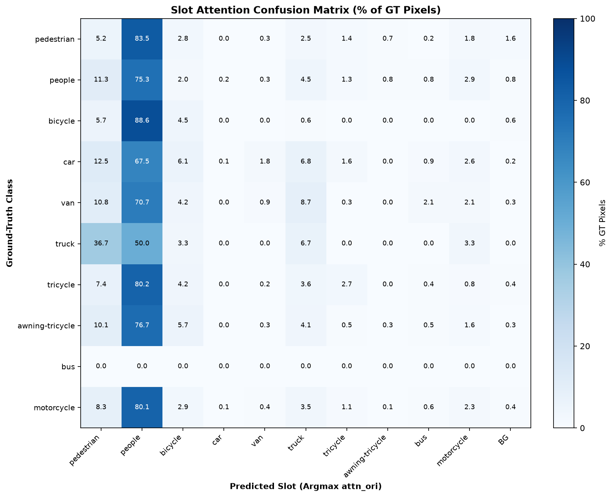

Deformable High-Res Micro-Patch Inspection

| component | l2_mean | small_ratio | medium_ratio | large_ratio | full_fisher | pca_fisher | class_cos_sep | fg_mass_pct |
|---|---|---|---|---|---|---|---|---|
| backbone.feat4 (//8) | 3.7783 | nan | 0.9646 | 0.9815 | 0.034 | 0.0969 | 0.0106 | 83.2304 |
| backbone.feat6 (//16) | 4.965 | nan | 0.9813 | 0.9858 | 0.0714 | 0.22 | 0.0198 | 84.249 |
| backbone.feat10 (//32) | 5.5427 | nan | 1.0962 | 1.0895 | 0.2155 | 0.3384 | 0.0234 | 87.1441 |
| neck.P3 (//8) | 4.933 | nan | 1.0281 | 1.0084 | 0.0365 | 0.0525 | 0.0026 | 83.5532 |
| neck.P4 (//16) | 4.7458 | nan | 1.0913 | 1.0487 | 0.0588 | 0.1102 | 0.0099 | 84.8851 |
| neck.P5 (//32) | 6.6847 | nan | 0.9719 | 0.9672 | 0.124 | 0.233 | 0.0537 | 86.211 |
| slot.cls_P3 (FiLM) | 4.933 | nan | 1.0281 | 1.0084 | 0.0365 | 0.0525 | 0.0026 | 83.5532 |
| patch.box_P3 (Deform+HR) | 4.933 | nan | 1.0281 | 1.0084 | 0.0365 | 0.0525 | 0.0026 | 83.5532 |
| patch.cls_P3 (Deform+HR) | 4.933 | nan | 1.0281 | 1.0084 | 0.0365 | 0.0525 | 0.0026 | 83.5532 |
